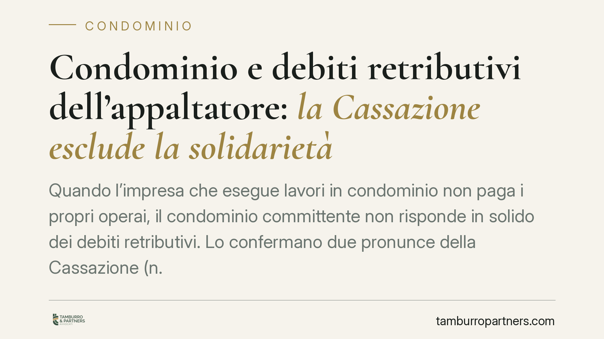

Condominio e debiti retributivi dell'appaltatore: la Cassazione esclude la solidarietà
Quando l'impresa che esegue lavori in condominio non paga i propri operai, il condominio committente non risponde in solido dei debiti retributivi. Lo confermano due pronunce della Cassazione (n. 19514/2023 e n. 32674/2025). I lavoratori conservano però un'arma: l'azione diretta verso il condominio nei limiti di quanto ancora dovuto all'appaltatore.

Il caso
Un condominio affida lavori a un'impresa appaltatrice. L'impresa incassa (in tutto o in parte) i corrispettivi, ma non paga le retribuzioni ai suoi operai. I lavoratori si rivolgono allora al condominio, chiedendo di rispondere di quei crediti.
La domanda giuridica è una sola: il condominio committente è coobbligato in solido per le paghe non versate dall'appaltatore?
Inquadramento normativo
La norma invocata dai lavoratori è l'art. 29, comma 2, del D.Lgs. 276/2003. Questa disposizione prevede la responsabilità solidale del committente, entro due anni dalla cessazione dell'appalto, per i trattamenti retributivi e i contributi dovuti ai lavoratori impiegati nell'opera. In pratica, chi commissiona il lavoro può essere chiamato a pagare al posto dell'appaltatore inadempiente.
La Cassazione, però, ha escluso che questa tutela si applichi al condominio. Con le sentenze n. 19514/2023 e n. 32674/2025 ha chiarito che il condominio è un ente di gestione privo di scopo di lucro, che agisce per la conservazione delle parti comuni e non nell'esercizio di un'attività imprenditoriale o professionale. Per questo viene equiparato al consumatore e resta fuori dal perimetro dell'art. 29, pensato per i committenti che operano in ambito d'impresa.
Resta invece pienamente operativo l'art. 1676 cod. civ. Questa norma consente ai dipendenti dell'appaltatore di agire direttamente contro il committente per ottenere quanto loro dovuto, ma solo nei limiti del debito residuo che il committente ha verso l'appaltatore al momento della domanda. Se il condominio ha già pagato tutto, i lavoratori non possono pretendere nulla.
Cosa cambia in concreto
La distinzione tra i due strumenti è decisiva e va spiegata con chiarezza.
Responsabilità solidale (art. 29). È una tutela ampia: il committente risponde dell'intero debito retributivo, a prescindere da quanto deve ancora all'appaltatore. Questa via è ora preclusa nei confronti del condominio.
Azione diretta (art. 1676). È una tutela più ristretta: il lavoratore può aggredire solo la somma che il condominio non ha ancora versato all'impresa. È quindi fondamentale il momento in cui l'azione viene proposta. Se arriva quando esistono ancora acconti o saldi da erogare, il lavoratore può soddisfarsi su quelle somme; se arriva a pagamenti conclusi, l'azione è priva di oggetto.
Per il condominio questo significa un'esposizione sensibilmente più contenuta rispetto a quella di un committente imprenditore. Ma non significa immunità: finché esiste un debito verso l'appaltatore, quel debito può essere "intercettato" dai lavoratori.
Per l'amministratore la gestione dei pagamenti diventa quindi un momento delicato. Pagare l'appaltatore senza verificare la regolarità retributiva può esporre il condominio a richieste dei dipendenti sulle somme ancora dovute, con il rischio di dover pagare due volte la medesima prestazione.
Cosa fare in concreto
- Verificate la regolarità retributiva e contributiva dell'appaltatore prima di saldare gli stati di avanzamento lavori, richiedendo DURC e documentazione sui pagamenti al personale.
- Inserite nel contratto d'appalto clausole che subordinino il pagamento del saldo alla prova dell'avvenuto versamento di retribuzioni e contributi.
- Sospendete i pagamenti residui in presenza di contestazioni formali da parte dei lavoratori, che attivano l'azione diretta ex art. 1676 c.c. sulle somme non ancora erogate.
- Documentate ogni versamento all'appaltatore con date e importi precisi: in un eventuale contenzioso occorre dimostrare l'ammontare del debito residuo al momento della domanda.
- Consultate un legale prima di definire il saldo finale quando siano emerse criticità sui pagamenti al personale dell'impresa.
In sintesi
Il condominio non è un garante universale delle paghe non versate dall'appaltatore. Gode della protezione riservata al consumatore e sfugge alla responsabilità solidale dell'art. 29. Rimane però esposto all'azione diretta dei lavoratori nei limiti di quanto deve ancora all'impresa. La gestione attenta dei pagamenti è lo strumento più efficace per ridurre il rischio.
---
*Contributo informativo a cura di Tamburro & Partners - Avv. Giuseppe Tamburro. Non costituisce parere legale.*
Ogni condominio ha una storia a sé.
Se gestisci un'amministrazione e vuoi un confronto su una specifica questione condominiale, scrivi allo studio. Ti rispondiamo entro un giorno lavorativo.